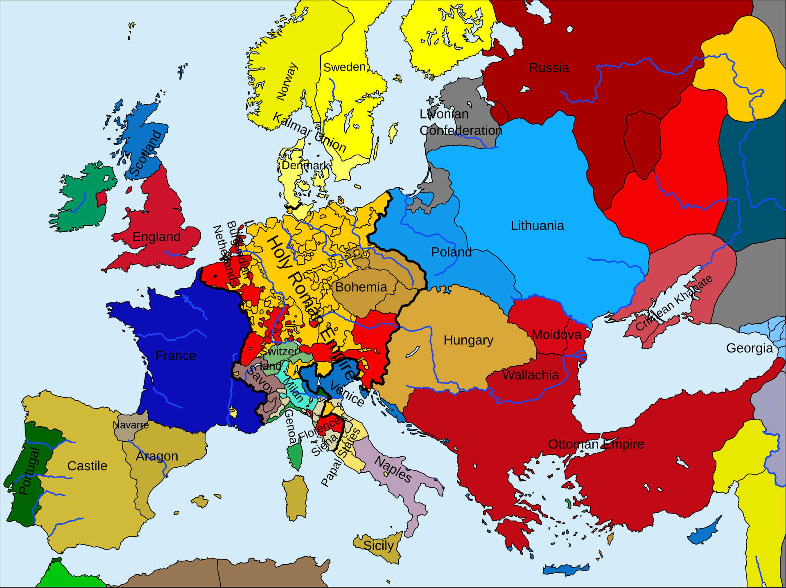
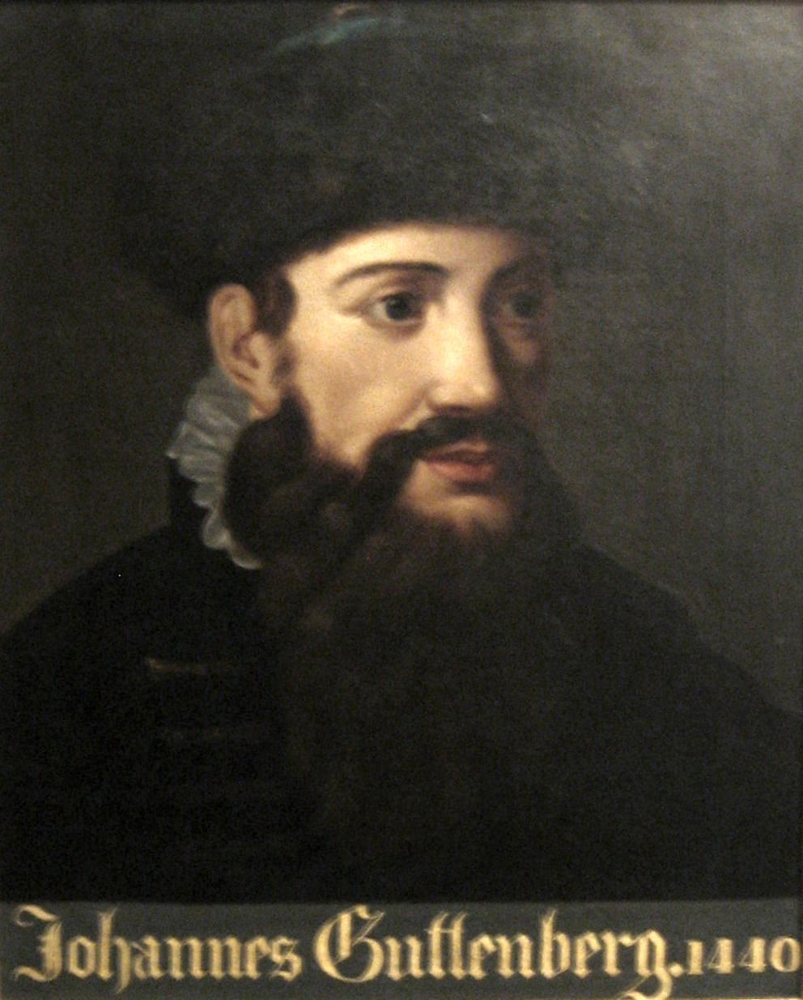
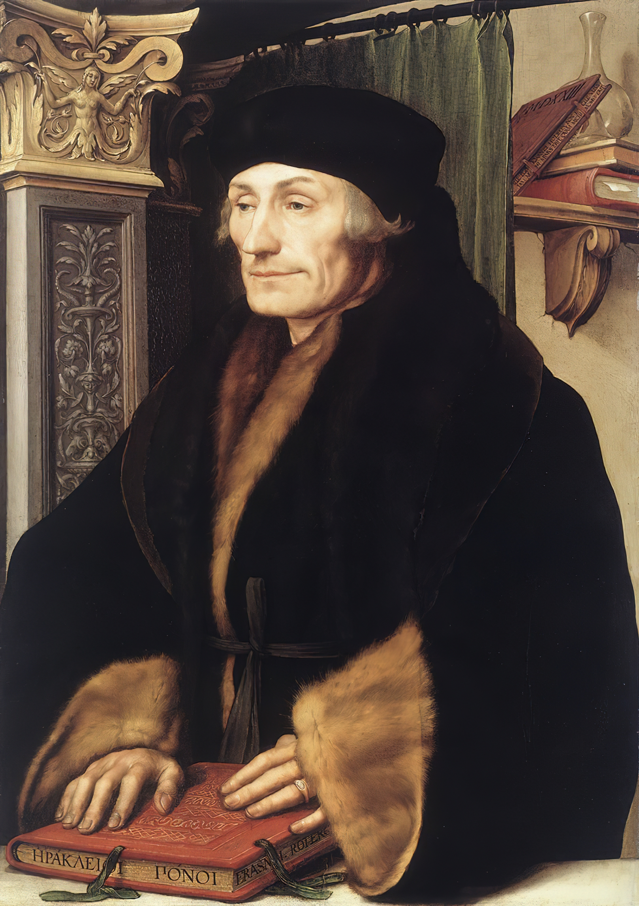
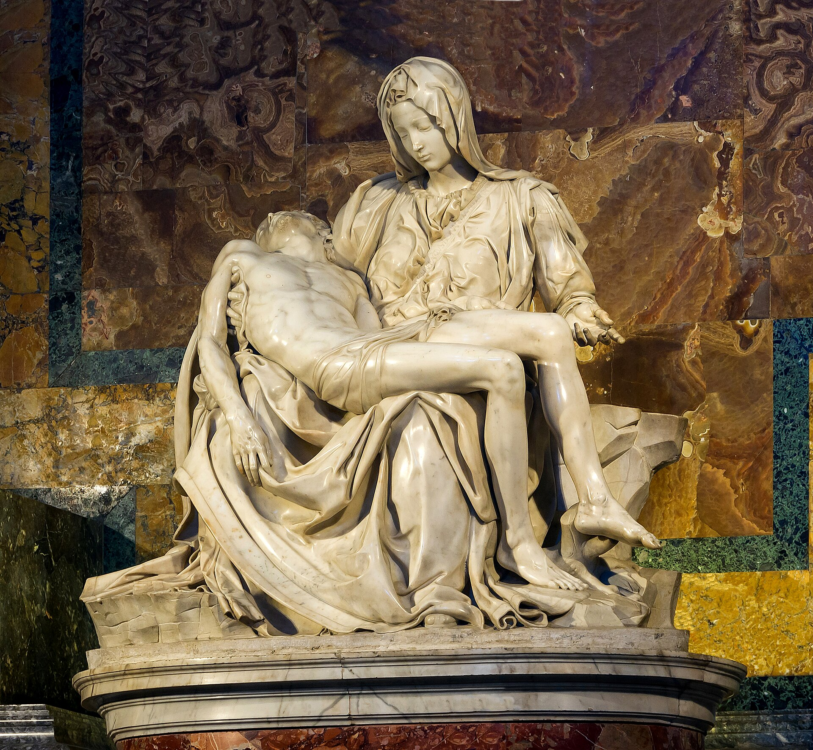
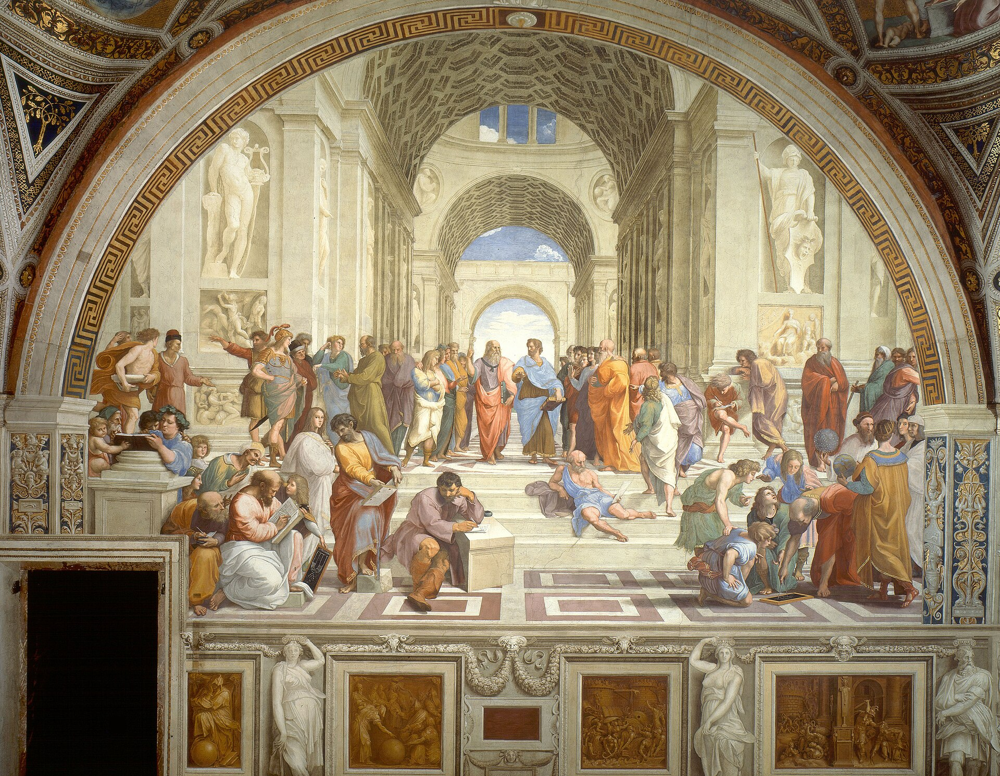
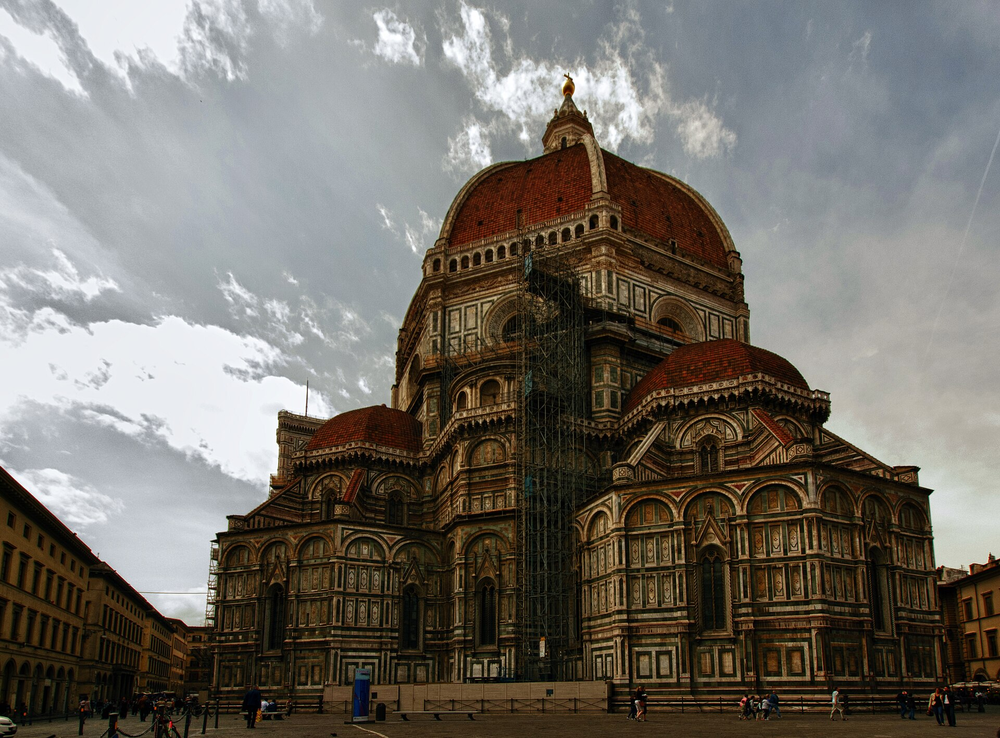
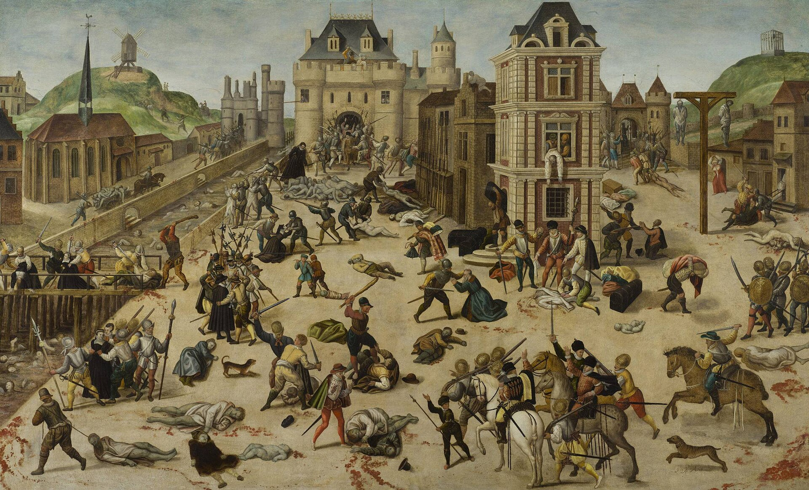

Histoire et éducation à la citoyenneté
07 / 12 réalité sociales
Le renouvellement de la vision de l'homme
XVe et XVIe siècles · L'humanisme
- art
- critique
- humanisme
- individu
- liberté
- philosophie
- Réforme
- Renaissance
- responsabilité
- science

Mise en contexte
La Renaissance est un moment de l'histoire représentant la transition entre deux périodes historiques : le Moyen Âge et les Temps modernes. On situe la Renaissance entre 1400 et 1600. C'est durant cette période que l'Homme a renouvelé sa vision de l'humanité et qu'il a commencé à remettre en question l'importance de Dieu.
(Source : Alloprof)
L'humanisme imprègne en profondeur la culture des sociétés européennes à la Renaissance. La pensée critique se substitue progressivement à l'adhésion aux traditions transmises par l'Église. L'étude de la Renaissance permet de saisir les principales caractéristiques de l'humanisme et de cerner certains des fondements de la culture occidentale.
Concepts à l'étude
- Art : les oeuvres créées pour leur beauté et leur sens, comme la peinture, la sculpture et l'architecture, qui se transforment à la Renaissance.
- Esprit critique : s'interroger sur la véracité d'un texte ou d'une information, autrement dit ne pas croire tout ce qu'on nous raconte ou tout ce qu'on lit.
- Géocentrisme : théorie faisant de la Terre le centre de l'Univers.
- Héliocentrisme : système d'après lequel le Soleil est considéré comme le centre de l'Univers, à l'opposé du géocentrisme.
- Humanisme : la façon de penser qui place l'être humain, sa raison et son éducation au centre des préoccupations.
- Indulgence : la rémission devant Dieu de la peine due pour les péchés, que le fidèle obtient à certaines conditions déterminées.
- Individu : chaque personne prise pour elle-même, avec sa liberté et sa responsabilité face à son destin.
- Liberté : la possibilité de penser, de croire et d'agir par soi-même, valeur remise au goût du jour par les humanistes.
- Philosophie : la recherche de la sagesse et de la vérité par le raisonnement, à la manière des penseurs grecs et romains.
- Raison : la faculté qui permet à l'être humain de connaître, de juger et d'agir conformément à des principes.
- Réforme protestante : mouvement religieux qui donna naissance au protestantisme.
- Renaissance : la période des 15e et 16e siècles marquée par le retour aux savoirs de l'Antiquité et par une nouvelle vision de l'être humain.
- Responsabilité : l'idée que chaque personne répond de ses choix et peut améliorer sa condition par ses efforts.
- Science : les connaissances sur le monde bâties par l'observation, l'expérimentation et le raisonnement.
Situer la Renaissance dans le temps
La Renaissance est une période que les historiens situent aux 15e et 16e siècles et qui a commencé en Italie pour se propager sur tout le reste du continent européen. Elle est caractérisée par un retour aux écrits, aux arts et aux sciences inspirés de l'Antiquité. Avec leurs oeuvres artistiques, techniques et philosophiques, les artistes de la Renaissance vont bousculer la vision du monde dominée à l'époque par la chrétienté.
Situer la Renaissance dans l'espace

Source
BoH, Europe1500, Wikimedia Commons. Licence : Creative Commons BY-SA 3.0.L'Europe, au 16e siècle, est composée de plusieurs royaumes. En effet, les royaumes d'Espagne, du Portugal, de France et d'Angleterre sont déjà bien définis, alors que le Saint-Empire romain germanique (ancêtre de l'Allemagne moderne) est à son apogée. Sur le territoire de l'actuelle Italie se trouvent le royaume de Naples ainsi que les États de l'Église (l'actuel Vatican). Il est important de préciser, toutefois, que les frontières des royaumes européens évolueront dans les siècles subséquents, pour atteindre leur forme actuelle au courant du 20e siècle.
La diffusion du savoir
L'invention du procédé d'impression par Gutenberg vers 1450

Source
Unidentified painter, Anonymous portrait of Johannes Gutenberg dated 1440, Gutenberg Museum, Wikimedia Commons. Licence : Domaine public.Au début du Moyen Âge, les livres étaient fabriqués un à un dans des monastères spécialisés. À partir des années 1200, les monastères abandonnèrent cette activité à des ateliers laïcs installés près des universités. Des copistes y recopient les textes à la plume d'oie sur des feuilles de parchemin ou de papier, à partir d'un original, pendant que des enlumineurs agrémentent les pages de délicates miniatures aux couleurs vives. Les ateliers vendent ainsi les manuscrits à prix d'or aux clercs et aux bourgeois assez riches pour se les payer. Mais à l'époque de Gutenberg, la copie de manuscrits n'est plus en état de satisfaire les besoins de lecture et d'apprentissage d'un nombre croissant d'étudiants et d'érudits.
Gutenberg, graveur sur bois, a l'idée aussi simple que géniale d'appliquer un procédé à des caractères mobiles en plomb. Chacun représente une lettre de l'alphabet en relief. L'assemblage ligne à ligne de différents caractères permet de composer une page d'écriture. On peut ensuite imprimer à l'identique autant d'exemplaires que l'on veut de la page, avec un faible coût marginal, puisque seule coûte la composition initiale.
Quand on a imprimé une première page en un assez grand nombre d'exemplaires, on démonte le support et l'on compose une nouvelle page avec les caractères mobiles. Ainsi obtient-on un livre à de nombreux exemplaires en à peine plus de temps qu'il n'en aurait fallu pour un unique manuscrit.
(Source : Hérodote.net)
Les moyens de diffusion des savoirs
L'imprimerie. L'invention de l'imprimerie vers 1450-1453 joue un rôle majeur dans la diffusion du savoir à la fin du Moyen Âge. En effet, cette invention de Gutenberg permet la démocratisation du savoir et la multiplication des ouvrages antiques.
Les voyages. Dès la Renaissance, la pensée humaniste confère au voyage et à l'expérience du monde qui s'y acquiert une place centrale dans la formation générale de l'homme. Grâce notamment à l'expérimentation et à l'observation du monde, les humanistes acquièrent certains savoirs, qu'ils peuvent ensuite partager.
Les correspondances. À travers les correspondances, plusieurs humanistes réussissent à partager leur savoir à travers l'Europe. Les correspondances n'ont pas servi uniquement à partager certains savoirs, mais aussi à les enrichir et à améliorer la connaissance.
L'université. La Renaissance n'a pas dépendu uniquement de l'imprimerie pour apparaître et exister. De grands humanistes de la Renaissance italienne sont morts avant l'invention de l'imprimerie. Les découvertes majeures des textes de l'Antiquité se sont faites dans les universités italiennes, puis européennes.
La Renaissance et l'humanisme
Le retour aux savoirs de l'Antiquité grecque et romaine

Source
Hans Holbein the Younger, Holbein-erasmus, Wikimedia Commons. Licence : Domaine public.La Renaissance est une période où les intellectuels « retournent » aux textes et aux valeurs de l'Antiquité. Ils relisent les textes des grands philosophes grecs et romains et ramènent au goût du jour certaines valeurs. Parmi celles-ci, il y a la liberté de pensée, la liberté de religion, la responsabilité de l'individu face à son destin et l'esprit critique.
Ces philosophes considèrent que l'Homme doit être au centre des préoccupations et que la connaissance et l'éducation devraient être accessibles à tous. Ils croient également que l'être humain peut, grâce au raisonnement et par l'expérience, arriver à comprendre le monde dans lequel il vit. Cette nouvelle façon de penser sera appelée humanisme et les philosophes qui l'élaboreront seront des humanistes. Les humanistes les plus connus sont Rabelais, Montaigne, Descartes, Thomas More, Blaise Pascal et Érasme.
Les humanistes et l'Église catholique
Les humanistes étaient des penseurs qui mettaient l'accent sur la connaissance, la raison et la philosophie. Ils cherchaient à redécouvrir les textes anciens, en particulier ceux de l'Antiquité grecque et romaine, et à les étudier de manière critique. Ils mettaient également de l'avant l'idée que l'homme pouvait améliorer sa condition et réaliser son plein potentiel grâce à l'éducation et à l'usage de la raison.
Cependant, les idées humanistes entraient souvent en contradiction avec les enseignements de l'Église catholique. L'Église considérait que la vérité absolue était révélée par Dieu dans la Bible et que la foi était le principal moyen d'atteindre le salut. Pour l'Église, la raison et la connaissance humaines étaient limitées et devaient être subordonnées à la foi.
L'Église voyait donc les idées des humanistes comme une menace pour son autorité et sa doctrine. Les humanistes remettaient en question certaines pratiques de l'Église, critiquaient les abus et les excès du clergé et prônaient une plus grande liberté de pensée. Cela mettait en danger la structure hiérarchique et le contrôle que l'Église exerçait sur la société de l'époque.
Bien que certains religieux et théologiens aient été eux-mêmes influencés par les idées humanistes, l'Église a souvent réagi avec fermeté. Des censures, des procès et même des condamnations à mort ont eu lieu pour réprimer les idées considérées comme hérétiques ou subversives. En réponse à cette opposition, certains humanistes ont choisi l'exil ou ont été persécutés.
La Renaissance scientifique
La science évolue grandement lors de la Renaissance. En effet, les humanistes considèrent que la science doit être basée sur le raisonnement et sur l'esprit critique au lieu de la Bible. De plus, ils suggèrent que l'observation et l'expérimentation se doivent de faire partie intégrante de la méthode scientifique.
André Vésale, anatomiste et médecin
André Vésale, né en décembre 1514 et mort en octobre 1564, est un anatomiste et médecin flamand de la Renaissance. Vésale était le médecin de la cour royale de l'empereur Charles Quint du Saint-Empire romain germanique, puis de son fils Philippe II, roi d'Espagne. Il est essentiellement renommé pour son ouvrage De humani corporis fabrica (« à propos de la structure du corps humain », en français), publié en 1543 et réédité en 1555. Par cette oeuvre qui a révolutionné la conception scientifique du corps humain, Vésale est considéré comme l'un des fondateurs de l'anatomie et de la médecine moderne.
(Source : Wikipédia)
Le modèle astronomique
En astronomie, Nicolas Copernic (1473-1543) révolutionne le modèle astronomique tel qu'il était connu au Moyen Âge. En effet, la théorie du géocentrisme était enseignée et globalement acceptée. L'Église enseignait ainsi que la Terre est au centre de l'Univers et que les astres tournent autour d'elle. Copernic, pour sa part, propose un nouveau modèle astronomique grâce à ses observations. Il propose la théorie de l'héliocentrisme, faisant du Soleil le centre de l'Univers. Cette théorie a, plus tard, été validée par Galilée à l'aide de sa lunette astronomique.
La Renaissance artistique
L'art va considérablement évoluer durant la Renaissance. De nouvelles techniques sont développées par les artistes, ce qui permettra à cette période de se démarquer sur le plan artistique.
Le réalisme et la perspective
Les oeuvres créées par les artistes de la Renaissance peuvent être qualifiées, pour la plupart, de réalistes. En effet, les peintres ont le souci d'exposer leur sujet de façon la plus réaliste possible. Ils tentent de respecter les proportions, la symétrie et l'harmonie des formes, comparativement aux oeuvres du Moyen Âge qui, bien souvent, n'ont pas ce même respect.
La perspective, cette nouvelle méthode découverte par les artistes de l'époque, permet de représenter la vue d'objets à trois dimensions sur une surface plane. En d'autres mots, grâce à la technique de la perspective, les peintres peuvent illustrer la profondeur et la distance sur leur toile en utilisant un point de fuite qui oriente l'oeil de l'observateur.
Quatre chefs-d'oeuvre de la Renaissance
La Pietà (1499) de Michel-Ange. La Pietà représente le thème religieux de la « Vierge douloureuse » tenant sur ses genoux le corps de Jésus descendu de la croix, avant d'être déposé dans son tombeau. Il s'agit d'un mélange entre la beauté païenne et la fidélité religieuse.
La naissance de Vénus (1484-1485) de Sandro Botticelli. Cette célèbre peinture de Sandro Botticelli (1444-1510) illustre la naissance de Vénus, déesse romaine de l'amour et de la beauté. Le teint blanchâtre de la déesse, les proportions harmonieuses de son corps et sa posture rappellent les statues de l'Antiquité gréco-romaine, que les artistes de la Renaissance prennent pour modèle. Au moment où Botticelli peint sa Vénus, cela ne fait que cinquante années que les artistes européens représentent des corps humains nus.
La Joconde (1503-1506) de Léonard de Vinci. La technique de composition de la Joconde en fait une des oeuvres les plus étudiées dans l'histoire de l'art et par les apprentis artistes. Elle est appréciée pour son cadrage très moderne, comme un portrait qu'on pourrait réaliser de nos jours. Plus subtilement, des effets d'optique sont créés par l'emplacement des yeux de la jeune femme et son sourire discret. Certains disent qu'on a l'impression d'être constamment observé par la Joconde, quelle que soit la position depuis laquelle on la regarde. Cette anecdote démontre les connaissances scientifiques et anatomiques de Léonard de Vinci. Quant au célèbre sourire de Mona Lisa, des témoignages narrent qu'un groupe de musiciens jouait pendant les heures de travail du peintre afin qu'elle garde cette attitude joyeuse. L'arrière-plan est également un cas d'école : la technique du sfumato est utilisée pour créer une perspective qui se fond de manière douce. (Source : Paris City Vision)
L'École d'Athènes (1509-1511) de Raphaël. L'oeuvre représente une assemblée idéale des plus grands esprits de l'Antiquité. C'est une manifestation de l'humanisme, qui place la raison humaine et les textes antiques au centre de l'apprentissage. Au centre, Platon pointe son doigt vers le ciel, ce qui signifie que la vérité se trouve dans le monde des idées, au-delà du monde physique. Aristote, à sa gauche, tend la paume vers le sol, ce qui symbolise l'empirisme : la vérité s'observe par l'expérience et la science. Autour d'eux se trouvent notamment Socrate, qui argumente avec un groupe de jeunes, Pythagore, qui écrit dans un livre entouré de disciples, Euclide, qui trace une figure géométrique avec un compas, ainsi que Zoroastre et Ptolémée, qui tiennent un globe céleste et un globe terrestre. Raphaël s'est même peint parmi les savants, s'élevant ainsi au rang d'intellectuel.

Source
Jebulon, Michelangelo's Pietà Saint Peter's Basilica Vatican City, Wikimedia Commons. Licence : Creative Commons Zero.
Source
Sandro Botticelli, Sandro Botticelli - La nascita di Venere - Google Art Project - edited, Wikimedia Commons. Licence : Domaine public.
Source
Leonardo da Vinci, Mona Lisa, by Leonardo da Vinci, from C2RMF retouched, Wikimedia Commons. Licence : Domaine public.
Source
Raphael, "The School of Athens" by Raffaello Sanzio da Urbino, Wikimedia Commons. Licence : Domaine public.Le mécénat
Lors de la Renaissance, il n'est pas rare que les artistes tels que Michel-Ange, Léonard de Vinci ou Sandro Botticelli soient pris sous la tutelle d'un mécène. Ce dernier soutient financièrement les artistes afin qu'ils puissent créer librement leurs oeuvres. Ce soutien peut prendre la forme d'un hébergement ou d'une pension mensuelle.
La famille Médicis. Les Médicis de Florence sont parmi les familles qui ont le plus subventionné les arts en Italie. Par exemple, Cosme de Médicis, banquier florentin, a commandé de nombreuses oeuvres d'art, notamment le David de Donatello. Son petit-fils, Laurent de Médicis, est également devenu le mécène de plusieurs artistes de la Renaissance, dont Le Verrocchio, Léonard de Vinci, Sandro Botticelli et Michel-Ange. Laurent de Médicis était aussi le dirigeant de la cité de Florence, où il régnait sans partage.
François 1er. François 1er contribue à la diffusion de la Renaissance italienne en France : de nombreux artistes italiens sont au service du souverain, dont Benvenuto Cellini et Léonard de Vinci, qui demeure au Clos Lucé près d'Amboise de 1516 à 1519. Les peintres Rosso Fiorentino et Le Primatice ont aussi travaillé dans le château de Fontainebleau. C'est sous le règne de François 1er que la collection d'oeuvres d'art, dont la Joconde au prix de 4000 écus d'or, se constitue réellement.
L'architecture à la Renaissance

Source
Kevin Poh, Florence Cathedral (Duomo), Wikimedia Commons. Licence : Creative Commons BY 2.0.L'architecture, comme la science et l'art, évolue grandement lors de la Renaissance. Le style gothique moyenâgeux est délaissé alors que l'architecture antique revient à la mode. Les éléments architecturaux antiques tels que le dôme, le fronton et les colonnes dominent, et la symétrie des bâtiments devient la norme.
La Réforme protestante

Source
Lucas Cranach the Elder, Lucas Cranach d.Ä. - Martin Luther, 1528 (Veste Coburg), Wikimedia Commons. Licence : Domaine public.L'Église catholique règne en maître sur l'Europe depuis le milieu du Moyen Âge, car elle avait fait des alliances avec les rois afin d'augmenter leur pouvoir mutuel sur la population. Après près de mille ans d'existence, l'Église catholique était, aux yeux de quelques penseurs, due pour une mise à jour, un renouvellement, afin de concorder avec les nouvelles valeurs qui apparaissaient. On lui reprochait d'avoir des évêques qui se préoccupaient plus d'accumuler des richesses et d'avoir des moeurs plus que douteuses. On lui reprochait aussi la vente d'indulgences (billet que les gens achetaient afin de se faire pardonner leurs péchés et d'aller plus rapidement au Paradis), dont l'Église empochait l'argent pour construire encore plus richement la Cité du Vatican.
Les principales critiques envers le clergé
- Les membres du clergé préfèrent accumuler des richesses au lieu de remplir leur rôle auprès des fidèles;
- certains membres du clergé ne respectent pas leurs voeux de chasteté et de célibat;
- on dit des prêtres qu'ils sont peu instruits;
- la simonie, cette pratique qui consiste à demander de l'argent en retour des sacrements (mariage, baptême, funérailles, etc.);
- la vente d'indulgences.
L'apparition du protestantisme
L'Église catholique, refusant de changer, engendra la Réforme protestante. Cette réforme amènera la création de plusieurs nouvelles Églises qui pratiqueront les rituels chrétiens de façons différentes. Martin Luther, en Allemagne, fondera l'Église luthérienne à la suite de la publication de ses 95 thèses sur la vertu des indulgences en 1517. Dans celles-ci, il dénonce avec force le trafic des indulgences pratiqué depuis 1506 par le pape Jules II, puis par Léon X, qui finance la construction de la basilique Saint-Pierre de Rome. Ce dernier octroie une indulgence qui mène le généreux donateur, dont les péchés sont absous, directement au paradis. Jean Calvin, quant à lui, fondera l'Église calviniste. Ces deux nouvelles Églises auront en commun des rituels plus austères, mais aussi un accès à la lecture de la Bible, qui sera traduite dans la langue des fidèles et non en latin comme celle des catholiques.
En Angleterre, c'est le roi Henri VIII qui fonda l'Église anglicane, en réaction au refus du pape de lui accorder le divorce. Cette Église ressemblera grandement à l'Église catholique, au détail près que le roi devient aussi le chef de l'Église à la place du pape.
Les guerres de religion

Source
François Dubois 1529-1584, La masacre de San Bartolomé, por François Dubois, Wikimedia Commons. Licence : Domaine public.Au début du 16e siècle, Martin Luther conteste l'Église catholique et met en place la Réforme protestante. Très vite, le mouvement réformiste va se diffuser dans toute l'Europe, grâce à l'invention de l'imprimerie.
En France, le mouvement prend de plus en plus d'ampleur. Plusieurs familles issues de la noblesse y adoptent le protestantisme. Elles ne tardent pas à faire l'objet de persécutions de la part des catholiques. Dans la nuit du 23 au 24 août 1572, à Paris, des milliers de protestants huguenots furent massacrés par des catholiques, sous l'impulsion de la famille royale catholique et de Catherine de Médicis. Cet épisode sanglant, qui s'étendit ensuite à d'autres villes du royaume, marqua un tournant dans les conflits entre catholiques et protestants en France, exacerbant les tensions religieuses et politiques du 16e siècle.
Divisée, la France sombre dans une série de guerres civiles. Nés dans une atmosphère propice, les conflits armés dureront plus de 30 ans et ne s'achèveront qu'avec l'édit de Nantes.
La Contre-Réforme
Face à la création de ces nouvelles Églises dites protestantes, l'Église catholique a convoqué le concile de Trente, qui est une assemblée d'évêques. Le concile de Trente débute en 1545, trois ans après le rétablissement du tribunal de l'Inquisition, chargé de juger les hérétiques, c'est-à-dire les personnes qui ne se conforment pas aux croyances et aux pratiques catholiques.
L'Église a de plus créé l'Index, une liste de tous les ouvrages que les « bons catholiques » ne pourront lire sous peine de brûler en Enfer ou de se retrouver devant le tribunal de l'Inquisition. Elle a également créé de nouveaux ordres religieux afin de convertir les peuples nouvellement découverts en Amérique et, ainsi, augmenter le nombre de fidèles dans l'Église. Le plus connu est la Compagnie de Jésus, les Jésuites. C'est ce qu'on appela la Contre-Réforme catholique.